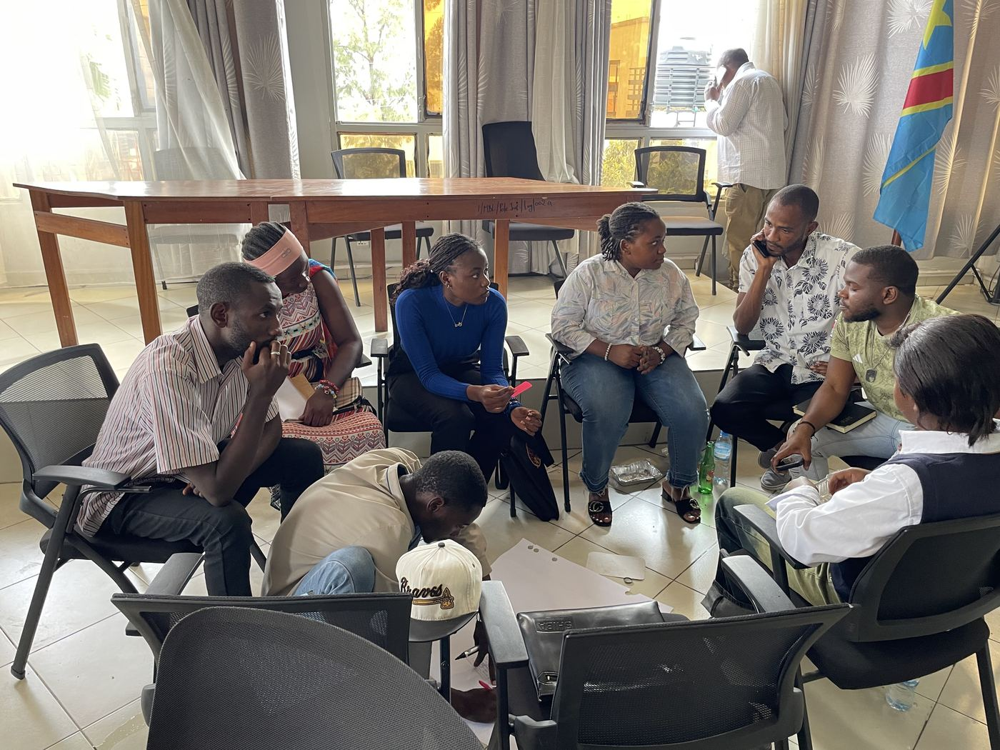
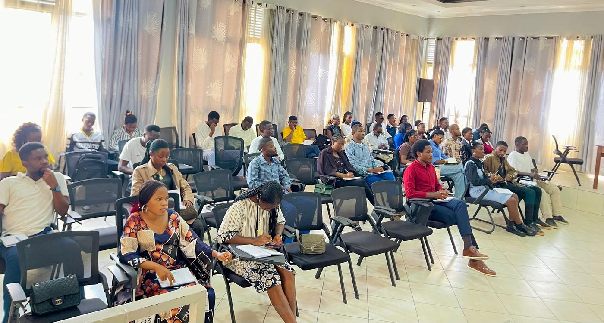

Our programsNos programmes
Integrated action for resilient communitiesDes actions intégrées pour des communautés résilientes
Conflict, poverty, climate change, health crises and exclusion are deeply linked, so no single problem can be solved alone. Our four programs put young people, women and vulnerable communities at the centre of change in eastern DR Congo.Conflits, pauvreté, changements climatiques, crises sanitaires et exclusion sont profondément liés : aucun défi ne se règle isolément. Nos quatre programmes placent les jeunes, les femmes et les communautés vulnérables au cœur du changement dans l'Est de la RDC.
Peace & leadershipPaix et leadership
Building leaders for lasting peace« Construire des leaders pour bâtir une paix durable »
Why this programPourquoi ce programme
For decades, eastern DR Congo has lived with armed conflict, community violence and mass displacement. Young people and women are often seen only as victims, yet they are the most dynamic drivers of social change. This program helps them become peacebuilders and responsible leaders who can prevent conflict, lead dialogue and resist manipulation, misinformation and hate speech.Depuis des décennies, l'Est de la RDC vit des conflits armés, des violences communautaires et des déplacements massifs. Les jeunes et les femmes sont souvent perçus comme les seules victimes, alors qu'ils sont les acteurs les plus dynamiques du changement social. Ce programme les aide à devenir des artisans de paix et des leaders responsables, capables de prévenir les conflits, de conduire le dialogue et de résister à la manipulation, à la désinformation et aux discours de haine.
ObjectivesObjectifs
- Train young people and women in ethical, inclusive leadership.Former les jeunes et les femmes au leadership éthique et inclusif.
- Develop critical thinking and media literacy to counter misinformation and hate speech.Développer l'esprit critique et l'éducation aux médias pour contrer la désinformation et les discours de haine.
- Build skills in mediation, advocacy and peaceful conflict resolution.Renforcer les compétences en médiation, plaidoyer et résolution pacifique des conflits.
- Increase youth and women's participation in local governance.Accroître la participation des jeunes et des femmes à la gouvernance locale.
- Strengthen social cohesion and reconciliation between communities.Renforcer la cohésion sociale et la réconciliation entre communautés.
ActivitiesActivités
Results so farRésultats
Who we reachBénéficiaires
Youth of Nyiragongo, women leaders, students, youth associations, community organisations, internally displaced people and conflict-affected communities.Jeunes de Nyiragongo, femmes leaders, étudiants, associations de jeunes, organisations communautaires, personnes déplacées internes et communautés affectées par les conflits.

Economic empowermentAutonomisation socio-économique
Turning young people's potential into lasting opportunity« Transformer le potentiel des jeunes en opportunités durables »
Why this programPourquoi ce programme
Unemployment and economic insecurity leave young people and women in Nyiragongo vulnerable to exclusion, dependency and, in some cases, recruitment by armed groups. We see them as drivers of the local economy: with skills, resources and opportunities, they become entrepreneurs and job creators.Le chômage et la précarité exposent les jeunes et les femmes de Nyiragongo à l'exclusion, à la dépendance et parfois à l'enrôlement dans des groupes armés. Nous les considérons comme des moteurs de l'économie locale : avec des compétences, des ressources et des opportunités, ils deviennent entrepreneurs et créateurs d'emplois.
ObjectivesObjectifs
- Develop entrepreneurship and vocational skills.Développer les compétences entrepreneuriales et professionnelles.
- Strengthen financial literacy and management.Renforcer l'éducation et la gestion financières.
- Support income-generating activities and youth-led enterprises.Soutenir les activités génératrices de revenus et les initiatives portées par les jeunes.
- Encourage social innovation and inclusive economic participation.Encourager l'innovation sociale et une participation économique inclusive.
ActivitiesActivités
Results so farRésultats
Who we reachBénéficiaires
Young people, women, internally displaced people, first-time entrepreneurs and community associations.Jeunes, femmes, déplacés internes, entrepreneurs débutants et associations communautaires.
Environment & climateEnvironnement et changement climatique
Restore today to protect tomorrow« Restaurer aujourd'hui pour préserver demain »
Why this programPourquoi ce programme
Conflict, displacement, uncontrolled resource extraction and climate change put heavy pressure on Nyiragongo's ecosystems. Deforestation, soil erosion, poor waste management and biodiversity loss threaten livelihoods. Young people and women, close to local realities, are key actors of the ecological transition.Conflits, déplacements, exploitation incontrôlée des ressources et changement climatique exercent une forte pression sur les écosystèmes de Nyiragongo. Déforestation, érosion, mauvaise gestion des déchets et perte de biodiversité menacent les moyens de subsistance. Proches des réalités locales, les jeunes et les femmes sont des acteurs essentiels de la transition écologique.
ObjectivesObjectifs
- Train communities in climate adaptation and mitigation.Former les communautés à l'adaptation et à l'atténuation climatiques.
- Restore ecosystems through concrete citizen action.Restaurer les écosystèmes par des actions citoyennes concrètes.
- Build local waste management and circular economy initiatives.Développer la gestion locale des déchets et l'économie circulaire.
- Strengthen environmental advocacy and governance.Renforcer le plaidoyer et la gouvernance environnementale.
ActivitiesActivités
Results so farRésultats
Who we reachBénéficiaires
Young people, women, schools, community organisations, displaced people and communities of Nyiragongo.Jeunes, femmes, écoles, organisations communautaires, personnes déplacées et communautés de Nyiragongo.
Health communicationCommunication et santé
Inform to protect, communicate to save lives« Informer pour protéger, communiquer pour sauver des vies »
Why this programPourquoi ce programme
Limited access to reliable information, rumours and unequal access to health services help diseases spread and fuel gender-based violence and stigma. Responsible, evidence-based communication changes that. We train young people and women as community relays who share accurate health messages.L'accès limité à une information fiable, les rumeurs et les inégalités d'accès aux soins favorisent la propagation des maladies, les violences basées sur le genre et la stigmatisation. Une communication responsable et fondée sur des données change la donne. Nous formons des jeunes et des femmes comme relais communautaires qui diffusent des messages de santé fiables.
ObjectivesObjectifs
- Train relays in responsible and behaviour-change communication.Former des relais à la communication responsable et au changement de comportement.
- Fight health misinformation with critical thinking.Lutter contre la désinformation sanitaire grâce à l'esprit critique.
- Raise awareness of sexual and reproductive health, GBV prevention and mental health.Sensibiliser à la santé sexuelle et reproductive, à la prévention des VBG et à la santé mentale.
- Support public health campaigns through media.Appuyer les campagnes de santé publique par les médias.
ActivitiesActivités
Results so farRésultats
Who we reachBénéficiaires
Young people, adolescents, women, community leaders, local organisations and the population of Nyiragongo.Jeunes, adolescents, femmes, leaders communautaires, organisations locales et population de Nyiragongo.

Our integrated approachNotre approche intégrée
Communities at the centreLes communautés au centre
Every program relies on citizen participation, inclusive dialogue, local innovation and close work with authorities, civil society and technical and financial partners. By strengthening peace, leadership, livelihoods, the environment and health together, we help communities meet their challenges for the long term.Chaque programme repose sur la participation citoyenne, le dialogue inclusif, l'innovation locale et la collaboration avec les autorités, la société civile et les partenaires techniques et financiers. En renforçant ensemble la paix, le leadership, les moyens de subsistance, l'environnement et la santé, nous aidons les communautés à relever durablement leurs défis.